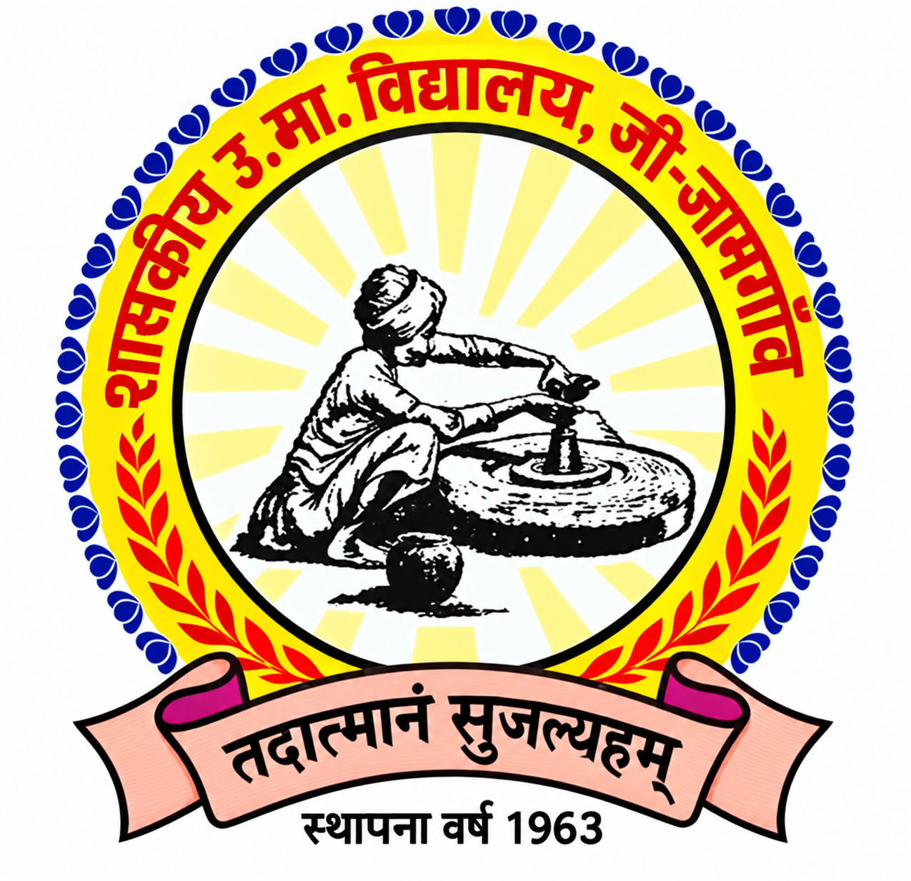

📘
कक्षा 6वीं
10 विद्यार्थी

शासकीय उच्चतर माध्यमिक विद्यालय जी-जामगाँव (बालक माध्य.)
वि.ख. – कुरुद | जिला – धमतरी (छ.ग.)हमारे विद्यालय की आधिकारिक वेबसाइट में आपका स्वागत है।
विद्यालय की जानकारी देखें विद्यार्थी परिणाम देखें
10 विद्यार्थी
15 विद्यार्थी
11 विद्यार्थी
नोट्स और PDF
सामग्री देखेंनोट्स और PDF
सामग्री देखेंनोट्स और PDF
📖 PDF पढ़ें ⬇️ PDF डाउनलोड करेंहिंदी एवं अंग्रेज़ी माध्यम की पुस्तकों के लिए छत्तीसगढ़ पाठ्यपुस्तक निगम (TBC) के सरकारी पोर्टल पर जाएँ।
नोट: सरकारी TBC सर्वर पर अस्थायी समस्या होने पर पेज नहीं खुल सकता।अलग Grammar विभाग: आसान हिंदी में नियम, उदाहरण, चित्रात्मक संकेत और अभ्यास। कक्षा के अनुसार पढ़ें।
📖 Grammar पढ़ना शुरू करेंबिल्कुल शुरुआत से अंग्रेज़ी बोलना सीखें। 33 पाठ, हिंदी अर्थ, सुनने का अभ्यास और बातचीत।
अंग्रेज़ी सीखना शुरू करेंMAT एवं SAT ऑनलाइन क्विज़, उत्तर-व्याख्या और प्रिंट योग्य वर्कशीट।
अभ्यास शुरू करेंहमारे विद्यालय के समर्पित शिक्षकगण
शिक्षकों की जानकारी लोड हो रही है...
हमारे विद्यालय के प्यारे विद्यार्थियों और समर्पित शिक्षकगण को जन्मदिन की हार्दिक बधाई।
जन्मदिन की जानकारी लोड हो रही है...
घर पर सीखें, छोटे-छोटे प्रयोग करें और अपनी कल्पनाशक्ति को नई उड़ान दें।
यह मंच कक्षा 6वीं, 7वीं और 8वीं के विद्यार्थियों के लिए है। हर गतिविधि को अपनी कॉपी में लिखें या घर पर सुरक्षित तरीके से बनाकर देखें।
एक साफ कॉपी या चार्ट पर अपने आदर्श विद्यालय का चित्र बनाइए। उसमें पुस्तकालय, खेल मैदान, पेड़ और कक्षा दिखाइए।
सीखें:रंग संयोजन, कल्पना और चित्र के माध्यम से विचार व्यक्त करना।
कल्पना कीजिए कि आप वैज्ञानिक हैं। आप कौन-सी समस्या हल करने के लिए नया आविष्कार करेंगे?
सीखें:विचार निर्माण, भाषा कौशल और समस्या समाधान।
सुरक्षित खुली जगह में किसी वस्तु की छाया सुबह, दोपहर और शाम को देखें। हर बार उसकी दिशा और लंबाई नोट करें।
सीखें:सूर्य की स्थिति और प्रकाश के कारण छाया में बदलाव।
घर या विद्यालय में पानी बचाने, बिजली बचाने और प्लास्टिक कम करने के तीन उपाय खोजिए।
सीखें:पर्यावरण के प्रति जिम्मेदारी और सतत जीवनशैली।
अपनी पसंद की कहानी या पाठ पढ़िए। उसके मुख्य पात्र, सबसे अच्छा भाग और उससे मिली सीख पहचानिए।
सीखें:पठन कौशल, समझ और अपने विचार स्पष्ट करना।
ईमानदारी, स्वच्छता या मित्रता पर एक छोटी कहानी सोचिए और उसे परिवार के सामने सुनाने का अभ्यास कीजिए।
सीखें:आत्मविश्वास, संवाद और मौखिक अभिव्यक्ति।
इस सप्ताह आपने क्या नया सीखा, किस काम में कठिनाई आई और अगली बार क्या बेहतर करेंगे—इसे लिखिए।
सीखें:आत्ममूल्यांकन, लक्ष्य निर्धारण और नियमित अभ्यास।
एक टोकरी में 5 आम हैं। 5 बच्चों को एक-एक आम देना है, फिर भी टोकरी में एक आम रहना चाहिए। कैसे?
सीखें:तार्किक सोच और समस्या को अलग दृष्टि से देखना।
शिक्षक द्वारा स्वीकृत रचनाएँ यहाँ दिखाई देंगी।
स्वीकृत रचनाएँ लोड हो रही हैं...
कक्षा 6वीं, 7वीं और 8वीं के विद्यार्थियों के लिए छह विषयों के रोचक अभ्यास खेल।
कक्षा 6वीं: NCERT नई हिंदी माध्यम पुस्तकें — मल्हार, Poorvi, दीपकम्, गणित प्रकाश, जिज्ञासा और समाज का अध्ययन।
NCERT आधिकारिक पुस्तकें देखें ↗ SCERT छत्तीसगढ़ कक्षा 8 पुस्तकें देखें ↗
पुस्तक लिंक आधिकारिक पोर्टल पर खुलेंगे। वर्तमान प्रश्न अभ्यास हेतु हैं; अध्यायवार प्रश्न संबंधित अध्याय-सामग्री की पुष्टि के बाद जोड़े जाएँगे।कक्षा और विषय चुनकर “खेल शुरू करें” दबाएँ। हर खेल में 5 प्रश्न होंगे। आसान, मध्यम और कठिन स्तर चुनें।
नोट: सभी कक्षाओं के छह विषयों की अध्याय-सूचियाँ उपलब्ध हैं। जिन अध्यायों का अलग प्रश्न-संग्रह अभी तैयार नहीं है, उनमें विषय-आधारित सामान्य अभ्यास प्रश्न दिखेंगे और इसकी सूचना प्रश्न के साथ दी जाएगी।
विद्यालय के महत्वपूर्ण कार्यक्रम, परीक्षाएँ और अवकाश
कार्यक्रमों की जानकारी लोड हो रही है...
विद्यालय की तस्वीरें लोड हो रही हैं...
Firebase एडमिन पैनल लोड हो रहा है…
Govt. Boys MS G-Jamgaon
वि.ख. – कुरुद, जिला – धमतरी, छत्तीसगढ़ 8962762268
अपनी कक्षा, रोल नंबर और जन्मतिथि दर्ज करें।
हमारी वेबसाइट पर आपका स्वागत है।